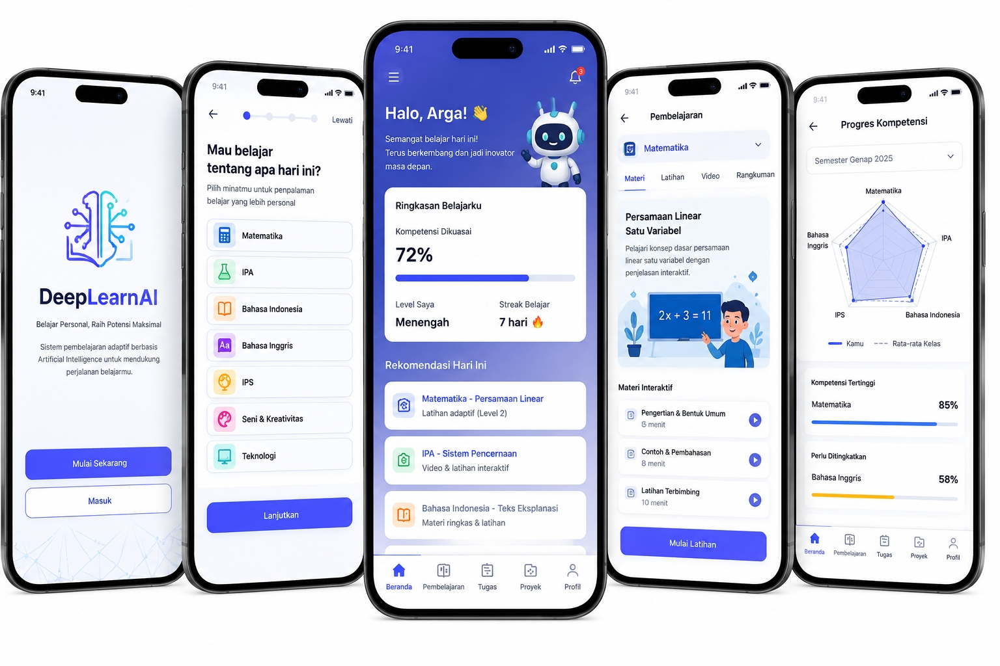
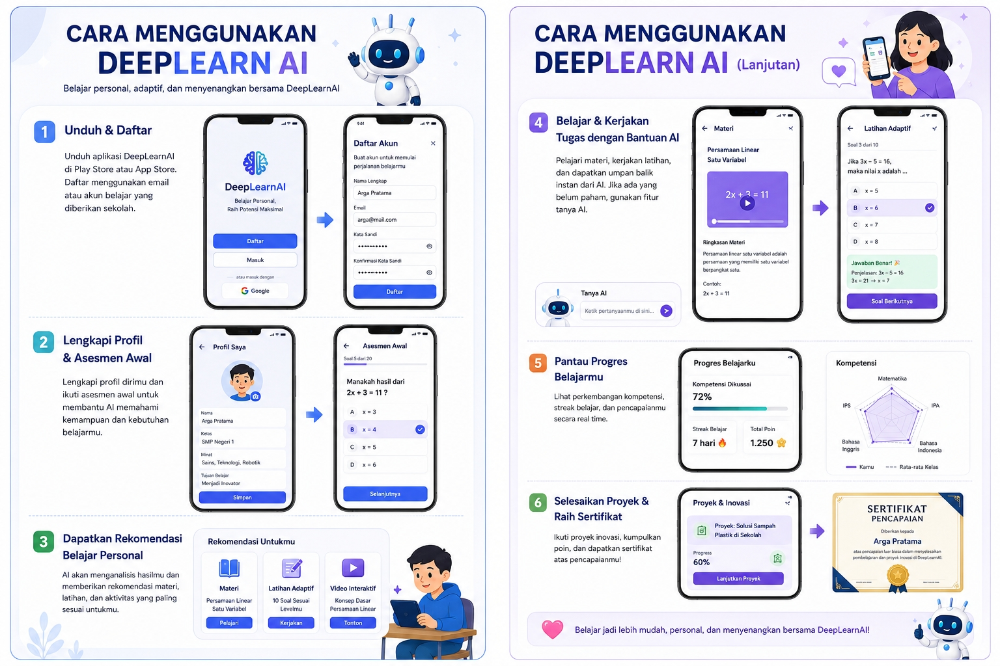
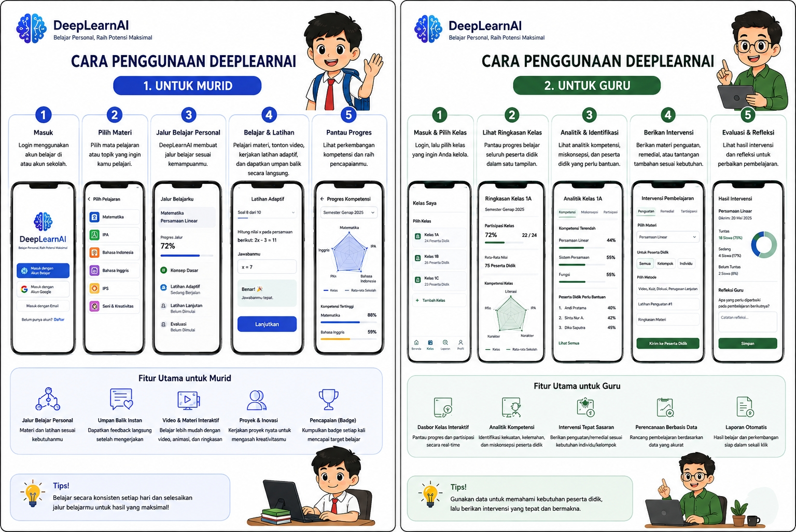

Inovasi Sistem Pembelajaran Personal Berbasis AI
DeepLearnAI dirancang bukan sebagai aplikasi tambahan yang berdiri sendiri, melainkan sebagai lapisan kecerdasan adaptif yang beroperasi di atas ekosistem pembelajaran nasional untuk menumbuhkan inovator berkelanjutan.
Tantangan Mutu Belajar dan Ketimpangan
5 Keterbaruan Utama DeepLearnAI
Kebaruan ini menyelesaikan keterbatasan sistem pembelajaran digital konvensional.
Learner Model Dinamis
Jalur belajar lebih tepat sasaran, tidak lagi bergantung pada label "pintar" atau "lemah" (berdasarkan kompetensi dan pola kesalahan).
Teacher-in-the-Loop
Menguatkan profesionalitas guru dan mencegah keputusan otomatis berisiko tinggi melalui dasbor transparan.
Innovation Studio
Mendorong kreativitas, kolaborasi, dan orientasi keberlanjutan melalui proyek solusi lokal.
Desain Rendah Bandwidth
Lebih realistis untuk sekolah dengan infrastruktur beragam (cache materi & sinkronisasi tertunda).
Privacy by Design
Meningkatkan keamanan, keadilan, dan kepercayaan pengguna (minimisasi data, audit bias).
Dari Penguasaan Konsep Menuju Inovasi
Skenario penggunaan DeepLearnAI mengikuti lima tahap berulang.
1. Diagnose
Asesmen singkat mengidentifikasi pengetahuan awal dan miskonsepsi.
2. Personalize
Sistem menyusun jalur belajar dengan tingkat dukungan berbeda.
3. Collaborate
Guru membentuk kelompok berdasar rekomendasi sistem & konteks sosial kelas.
4. Create
Murid menyelesaikan proyek solusi lokal melalui Innovation Studio.
5. Reflect
Murid menilai proses; guru memperbarui intervensi untuk siklus berikutnya.
Roadmap Implementasi
Penerapan perlu dilakukan secara bertahap agar didasarkan pada bukti.
Ko-Desain
Bersama guru, murid, ahli kurikulum, psikometri, dan keamanan data.
Uji Coba (Pilot)
Diterapkan pada sekolah dengan konteks & infrastruktur berbeda.
Validasi Dampak
Audit bias, evaluasi hasil, dan penyiapan interoperabilitas Rumah Pendidikan.
Perluasan Bertahap
Dilakukan setelah efektivitas, keadilan, keamanan & kesiapan guru terpenuhi.
Target Dampak & Manfaat Pemangku Kepentingan
| Dimensi | Indikator | Target Awal Pilot |
|---|---|---|
| Penguasaan kompetensi | Pertumbuhan skor dan proporsi ketuntasan | Peningkatan rerata minimal 10% dibanding pembanding |
| Keadilan belajar | Perubahan kesenjangan capaian antarwilayah | Kesenjangan tidak melebar: rekomendasi diaudit |
| Dukungan guru | Ketepatan identifikasi dan waktu tindak lanjut | Pengurangan waktu administrasi minimal 20% |
| Inovasi berkelanjutan | Jumlah dan kualitas proyek masalah lokal | Minimal satu proyek tervalidasi per tim per semester |
| Keamanan & kepercayaan | Insiden data dan penerimaan pengguna | Nol insiden kritis; 80% guru paham alasan rekomendasi |
Manfaat Utama
Murid
- Jalur belajar sesuai kecepatan & gaya belajar.
- Umpan balik instan & proyek solusi lokal.
Guru
- Deteksi kebutuhan murid lebih cepat & akurat.
- Waktu administrasi berkurang, fokus mendidik.
Sekolah
- Beroperasi pada infrastruktur terbatas (rendah bandwidth).
- Terintegrasi dengan ekosistem Rumah Pendidikan.
Bangsa
- Mendukung generasi inovator Indonesia Emas 2045.
- Mengurangi kesenjangan mutu belajar antarwilayah.
Lampiran Esai DeepLearnAI
Penjelasan Visual Produk.

Gambar 1. Menjelaskan Dashboard DeepLearnAI merupakan tampilan utama yang membantu peserta didik melihat dan mengelola proses belajar secara personal. Dashboard ini menampilkan ringkasan kompetensi yang telah dikuasai, rekomendasi materi dan latihan sesuai kebutuhan, perkembangan kompetensi, tugas dan kuis aktif, insight mengenai kekuatan serta bagian yang masih perlu ditingkatkan, serta akses ke proyek inovasi. Melalui tampilan ini, peserta didik dapat memantau perkembangan belajarnya secara mandiri, sedangkan guru dapat menggunakan informasi yang sama sebagai dasar pendampingan dan tindak lanjut pembelajaran yang tepat sasaran.

Gambar 2. Menjelaskan Panduan penggunaan dirancang agar peserta didik dapat menjalani proses pembelajaran personal dan adaptif tanpa hambatan teknis. Peserta didik terlebih dahulu masuk ke sistem, memilih mata pelajaran, kemudian mengikuti asesmen awal untuk mengetahui kemampuan dan kebutuhan belajarnya. Berdasarkan hasil tersebut, DeepLearnAI menyusun jalur belajar personal berupa materi, video, latihan adaptif, dan umpan balik yang sesuai dengan tingkat kemampuan peserta didik. Selanjutnya, peserta didik dapat memantau perkembangan kompetensi melalui fitur progres, serta mengikuti proyek dan kegiatan inovasi untuk menerapkan pengetahuan dalam menyelesaikan permasalahan nyata di lingkungan sekitarnya.

Gambar 3. Menjelaskan Panduan penggunaan DeepLearnAI untuk murid membantu murid belajar secara lebih terarah dan sesuai dengan kebutuhannya. Murid dapat masuk ke akun, memilih materi pelajaran, mengikuti jalur belajar personal yang disesuaikan dengan kemampuan, mengerjakan latihan secara interaktif, memperoleh umpan balik langsung, serta memantau perkembangan dan pencapaian belajar. Dengan memanfaatkan fitur tersebut secara konsisten, murid dapat belajar secara mandiri, memahami materi dengan lebih baik, dan mengembangkan potensi secara maksimal.
Simulasi dasbor personalisasi
Pilih murid untuk melihat bagaimana rekomendasi dan progres belajarnya berbeda-beda.
Progres pemahaman materi (5 minggu terakhir)
Memuat rekomendasi…
Penutup
DeepLearnAI menghadirkan transformasi pendidikan melalui pembelajaran adaptif yang membantu guru memahami kebutuhan setiap murid secara lebih cepat dan tepat, dengan tetap menempatkan guru sebagai pengambil keputusan utama. Melalui pengembangan berkelanjutan dan terintegrasi, sistem berpotensi mendukung lahirnya generasi Indonesia Emas 2045.
Daftar Pustaka
Tim DeepLearnAI
Disusun oleh mahasiswa Program Studi PGSD.